Futures Trading App by Android
A Java-Kotlin hybrid project using MVVM and MVP architectures. Live trading charts are powered via sockets and Flow. Supports third-party payments and built-in customer service system.
Linkstay hungry stay foolish
and I'm still hungry!
Over 11 years of professional experience in mobile development
Specialized in Flutter / Android / iOS.
With more than a decade of hands-on experience in software development, I bring deep expertise in crafting modern, high-performance mobile applications. I specialize in building clean and scalable UI layouts, including waterfall flows, nine-grid structures, and responsive one-row two-column designs—tailored for both usability and aesthetic impact.
My programming journey began with Java, which provided a solid foundation in object-oriented principles. This early experience enabled me to seamlessly transition into other languages, including Objective-C, Kotlin, and eventually Dart. Starting with Java was instrumental in shaping my understanding of core programming concepts and accelerating my ability to adapt across different ecosystems.
Here are some of my previous works on the development of current popular styles.
A Java-Kotlin hybrid project using MVVM and MVP architectures. Live trading charts are powered via sockets and Flow. Supports third-party payments and built-in customer service system.
Link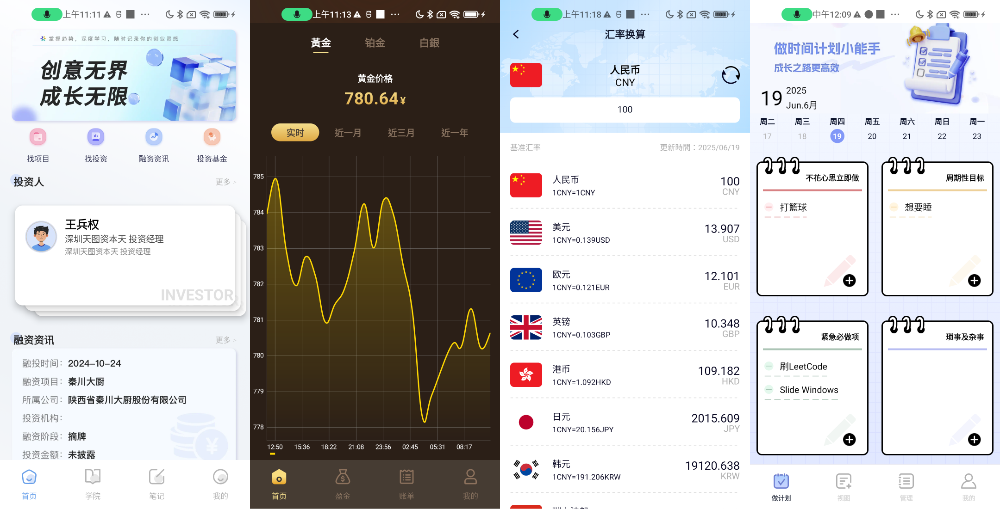
Created multiple Kotlin-based apps with Compose UI, designed for the Chinese market. Features ranged from notes and currency conversion to trading platforms. Architected with MVI, and powered by Hilt and Retrofit for clean and scalable development.
Link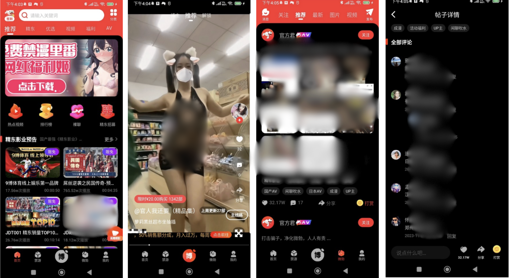
Various mainstream style design and development experiences, such as single-row double-column, nine-grid, waterfall flow, etc., also supports Alipay for purchases, features download caching etc.
LinkThis is an app for audiobooks. It supports Alipay for purchases, features download caching, subtitle playback, and employs a waterfall flow style, among other effects.
Link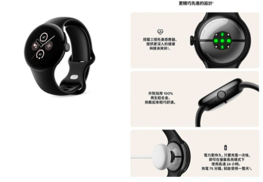
Mainly developed an app (Diagnostics App) for internal use by suppliers. Automatically detecting hardware devices such as speakers, microphones, E-SIM, Bluetooth, Wi-Fi functionality, and other hardware device features. This is a product I developed while at Google.
Link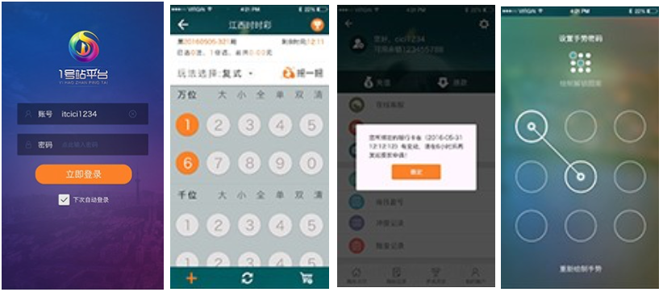
This was a Full-Stack job. Online lottery and gambling website Primarily responsible for mobile UI development Collaborated with backend for web scraping to fetch numbers Implemented functionality for distributing feedback bonuses during promotions.
Link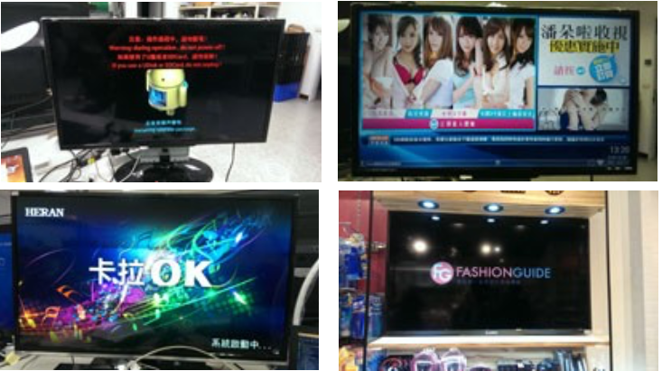
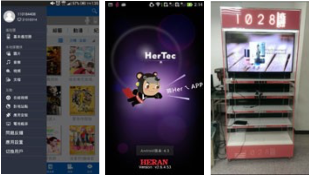
In addition to developing smart TVs, we have also ventured into the development of advertising broadcast TVs. Currently, our products can be found in major physical stores. We are also involved in the development of home appliance IoT, interactive development between mobile phones and TVs through voice, and Bluetooth transmission of images, apps, and more.
Link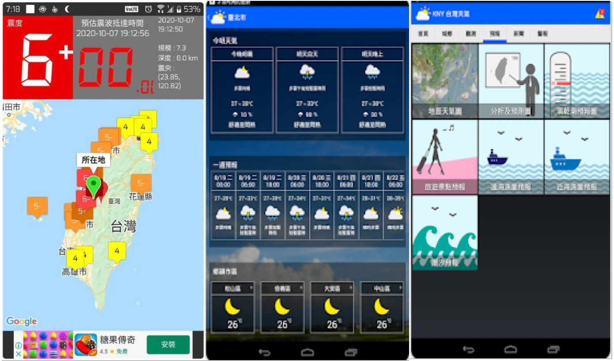
KNY Taiwan Weather App is incorporated the "Earthquake Early Warning" feature, which issues alerts before seismic waves arrive. With over a million downloads, the app has consistently provided accurate and timely earthquake information through numerous instances.
Google PlayDisplay some of the larger cases we have taken over the years.
Implemented a View–BLoC–Repository architecture: the View communicates with the BLoC (state machine) for UI state management, and the Repository leverages Platform Channels to transfer data between native layers and the BLoC.
Featured on Zeczec funded.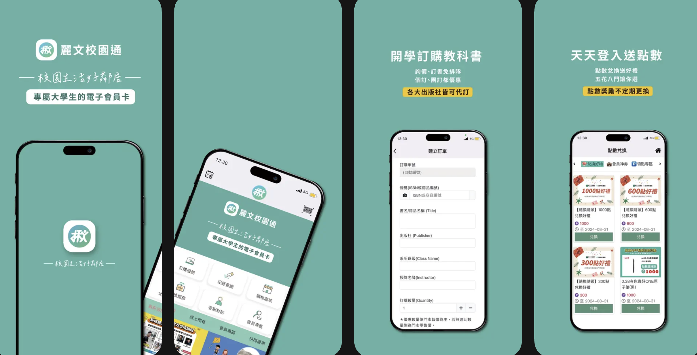
Flutter app built with Riverpod and Freezed. Book ordering and purchasing services for students. Integrated Firebase for login, push notifications, and image storage.
Link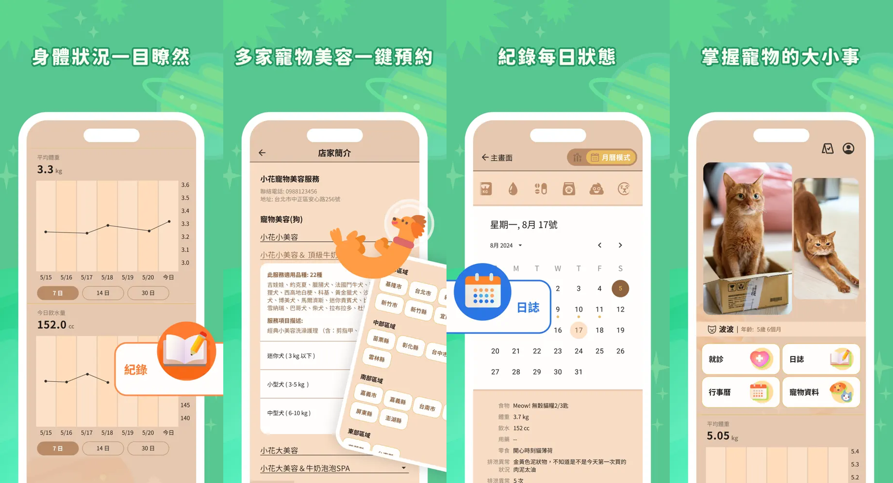
Flutter app built with Riverpod and Freezed. Connected to Taiwan's pet hospital system for tracking pet meals, weight, and health records. Integrated Firebase for login, push notifications, and image storage.
Link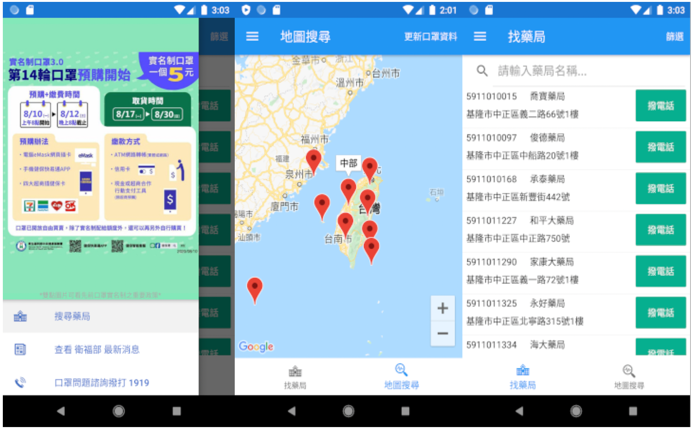
Due to COVID-19, everyone was short of masks. This app was created to help everyone find masks nearby.
Link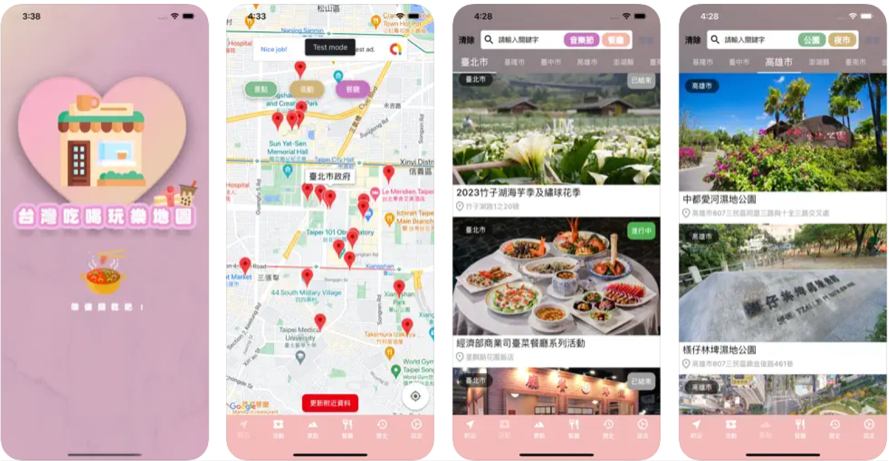
It's a mobile application that collects food, travel, leisure and entertainment information from all over Taiwan.
Link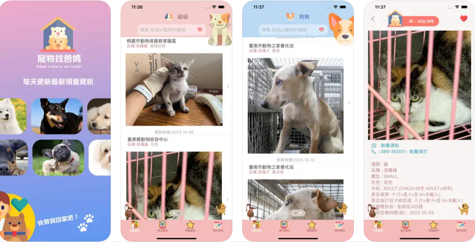
Cats and Dogs Find Homes : Help find lost cats and dogs and record the information of your pets.
Link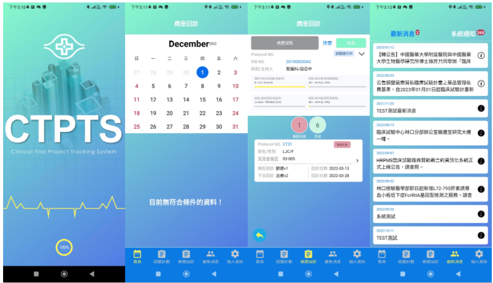
Help Chang Gung Memorial Hospital develop a dedicated platform for doctors to query the status of their patients.
Link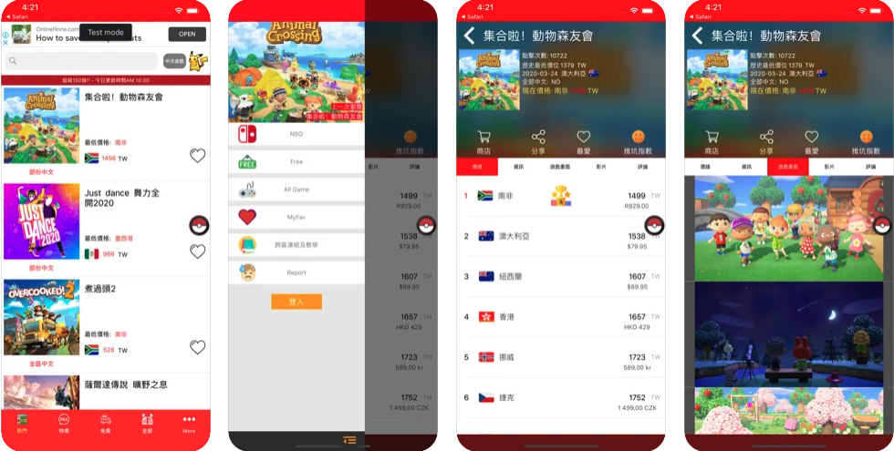
Utilizing web scraping to retrieve official data from Nintendo (PHP). Constructing a database using MySQL. Developed using JAVA and ObjectC. Employing the MVVM (Model-View-ViewModel) and KVO (Key-Value Observing) frameworks. Peak average of 1,000 users online per month. Many YouTubers have recommended the app in their introductions.
LinkThroughout my career, I have contributed to a wide range of projects, including large-scale initiatives, where I consistently emphasized the importance of writing clean, maintainable, and efficient code. I am a strong communicator who values collaboration and actively welcomes feedback to improve both personal and team performance. With frontend technologies evolving rapidly, I embrace a mindset of continuous learning to stay current and adaptive. I believe my solid technical foundation, hands-on experience, and dedication to code quality make me a strong addition to any engineering team. I look forward to the opportunity to further discuss how my background aligns with your team’s goals during the interview.